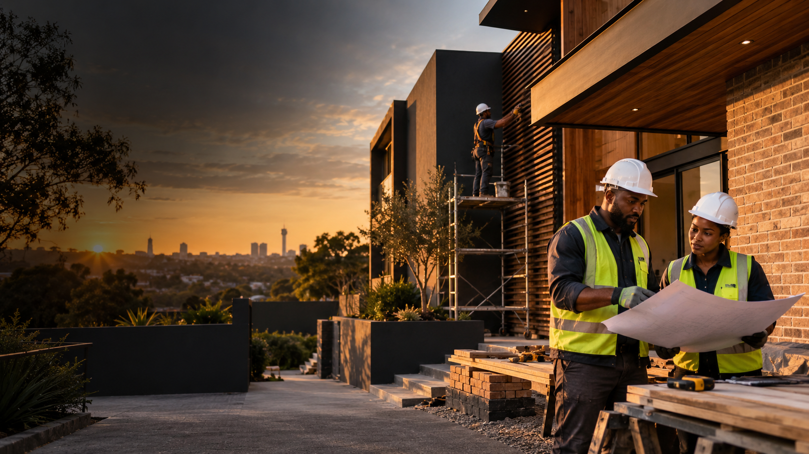

It solves the brief
The finished space improves how the property is used.
Selected work
Explore the thinking, coordination and craftsmanship behind our example transformations.
 01 · Fourways
01 · FourwaysKitchen + living areas
The owners wanted more light, easier movement and a kitchen that could handle everyday family life without looking purely functional.
Limited storage, disconnected living areas and services positioned for the old layout.
Replanned the circulation, relocated plumbing and electrical points, then coordinated cabinetry, counters, lighting and floors around one programme.
“The project felt planned from the first day. We always knew what was happening next.”

02 · SandtonBathroom renovation
The brief called for better storage and a more generous shower without moving the room’s walls.
A tight layout, poor ventilation and signs of water damage behind the shower.
Stripped the room safely, repaired the substrate, installed a complete waterproofing system and used wall-mounted elements to free up floor area.
How we measure a good result
The finished space improves how the property is used.
Hidden work receives the same attention as visible finishes.
Snags are closed, the site is cleaned and warranties are recorded.
The project stories and client quotations on this draft are illustrative and should be replaced with verified company work before public launch.
Your property could be next.
Start with an indicative range or ask us to arrange a site assessment.
Estimate my project ↗